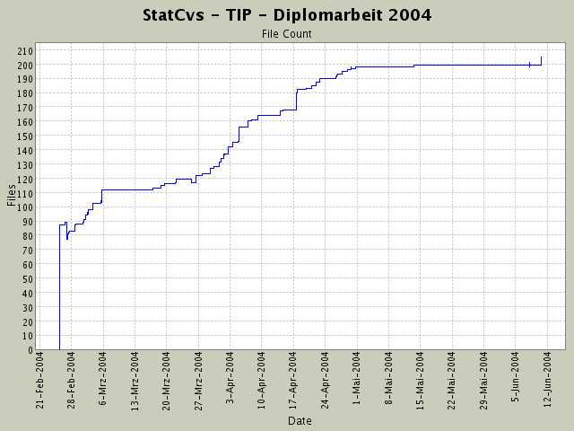
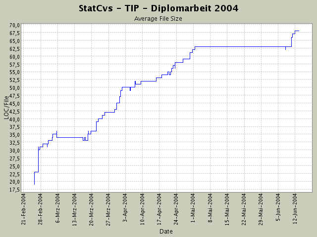

Total Files:
206 (2004-06-13 13:05)

| File | Lines of Code |
|---|---|
| WEB-INF/validator-rules.xml | 1044 |
| WEB-INF/src/de/fub/tip/datenbank/logik/SightGruppenBearbeiter.java | 588 |
| WEB-INF/src/de/fub/tip/datenbank/logik/ThemenBearbeiter.java | 567 |
| WEB-INF/src/de/fub/tip/datenbank/logik/NachSehenswuerdigkeitenPruefer.java | 564 |
| WEB-INF/build.xml | 550 |
| WEB-INF/src/de/fub/tip/datenbank/logik/EreignishistorienBearbeiter.java | 475 |
| WEB-INF/src/de/fub/tip/datenbank/logik/StandortPruefer.java | 445 |
| WEB-INF/src/de/fub/tip/datenanzeige/Koordinate.java | 306 |
| WEB-INF/src/de/fub/tip/resources/application.properties | 287 |
| WEB-INF/src/de/fub/tip/resources/application_de.properties | 287 |
| WEB-INF/src/de/fub/tip/resources/application_en.properties | 287 |
| WEB-INF/src/de/fub/tip/actions/LoginAction.java | 267 |
| WEB-INF/struts-config.xml | 235 |
| WEB-INF/src/de/fub/tip/datenanzeige/ormapper/SightVO.java | 230 |
| WEB-INF/src/de/fub/tip/datenbank/DBFunktionen.java | 202 |
| WEB-INF/src/de/fub/tip/actionforms/CreateUserActionForm.java | 195 |
| WEB-INF/src/de/fub/tip/datenbank/logik/InformationsAnzeiger.java | 194 |
| WEB-INF/src/de/fub/tip/actionforms/LoginActionForm.java | 185 |
| WEB-INF/src/de/fub/tip/actions/ShowProfilAction.java | 184 |
| WEB-INF/src/de/fub/tip/datenanzeige/ormapper/PictureVO.java | 183 |
| File | Changes |
|---|---|
| 98 | |
| 69 | |
| 69 | |
| 55 | |
| 42 | |
| 42 | |
| 36 | |
| 35 | |
| 34 | |
| 24 | |
| 24 | |
| 22 | |
| 22 | |
| 21 | |
| 19 | |
| 18 | |
| 18 | |
| 17 | |
| 17 | |
| 16 |
Generated by StatCvs v0.2-dev